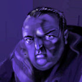
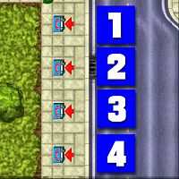
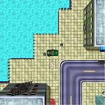
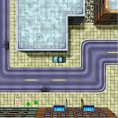
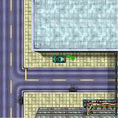
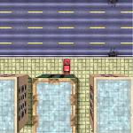
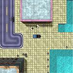
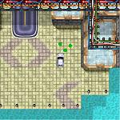
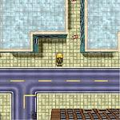
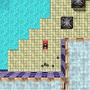

Liberty City 2 (Heist Almighty)

Bubby
このチャプターは N Tellberg からスタートします。チャプター開始後、いきなりミッションに突入します。
| ボス | Bubby |
|---|---|
| 目標スコア | 200万 |
| ミッション | 13 |
オープニングミッション
Mission 1
- 任務
- 誘拐されたボスの飼い犬を救出する
- フロー
- Start → (42秒) → NE Ardler → (43秒) → E Estoria → (26秒) → W Law Island → C Eaglewood → NE Island City
犯人からの電話が NE Ardler の公衆電話にかかってくるというので、そこに向かいます。
電話に出ると、今度は E Estoria に向かわされます。
電話で身代金の受け渡し場所を指定されます。W Law Island の Law Island Bridge に向かってください。
橋から身代金を放り投げると、ボートが現れて金を回収していきます。その後、犬の場所が判明するので、C Eaglewood に向かってください。
犬の捕らえられている車を発見したら、その車を運転して NE Island City のホテルに連れて行きます。ミッション完了。
| スコア | チェックポイント |
|---|---|
| +40,000 | 身代金を渡す |
| +5,000 | 犬の捕らえられている車に乗り込む |
| +30,000 | 犬をNE Island City のホテルに連れて行く (Mission Complete) |
初っぱなからせわしないミッションです。時間制限が厳しめですが、ついていけましたでしょうか。
公衆電話ミッション
この4つの公衆電話はそれぞれミッション2〜5につながっています。攻略はどのミッションからでも結構です。
| N Fort Law |
 |
Mission 2
- 任務
- 銀行強盗の片棒を担ぐ
- フロー
-
 → SE Guernsey City
→ NW Fort Law
→ NW Hackenslash 付近
→ S Hackenslash(
→ SE Guernsey City
→ NW Fort Law
→ NW Hackenslash 付近
→ S Hackenslash( )
→ N Law Island
)
→ N Law Island
ボスの指示で SE Guernsey City のパトカーを盗みます。
車に乗ったら、NW Fort Law の銀行に向かいます。車には爆弾が仕掛けられていて、少しでもダメージを与えると爆発します。時間制限はありませんので、最大限慎重に運転してください。
銀行の車庫に車を収めると、爆発して銀行のドアが破壊されます
次に、銀行に入った Tommy を乗せるため、NW Hackenslash 付近を走行中のパトカーを奪います。
S Hackenslash にいる Tommy を乗せたら、N Law Island のガレージに連れて行くとミッション完了です。
| スコア | チェックポイント |
|---|---|
| +5,000 | SE Guernsey City のパトカーを盗む |
| +30,000 | NW Fort Law の銀行のドアを破壊する |
| +10,000 | NW Hackenslash 付近を走行中のパトカーを奪う |
| +10,000 | そのパトカーに Tommy を乗せる |
| +40,000 | Tommy を N Law Island のガレージに連れて行く (Mission Complete) |
Tommy を乗せたら、南西にあるペイントショップに寄ってもいいと思います。ただし、パトカーはだめなので適当に車を乗り換えて。
Mission 3
- 任務
- ボスの母親を殺す
- フロー
-
 → NE Guernsey City
→ NE Guernsey City
NE Guernsey City に停まっている Repair Van に乗り込みます。
すると、ラジコンの操縦モードになります。このラジコンを操縦し、街中を走る Counthash を破壊してください。ちなみに、ラジコンは武器発射のキーで爆破できます。
見事破壊できるとミッション完了です。車が、S Island Heights に到着してしまうとミッション失敗です。
| スコア | チェックポイント |
|---|---|
| +10,000 | Repair Van に乗り込む |
| +50,000 | ターゲットを破壊する (Mission Complete) |
ラジコンは車の下に潜り込むことができます。
Mission 4
- 任務
- ヤクを奪う
- フロー
-
 → W Guernsey City
→ NW Hackenslash
→ NE Guernsey City
→ E Hackenslash
→ (somewhere)
→ W Guernsey City
→ NW Hackenslash
→ NE Guernsey City
→ E Hackenslash
→ (somewhere)
ヤクを運搬中のバンが W Guernsey City にあるというので、そこに向かいます。
車に乗ると、これが罠だったことがわかるので、NW Hackenslash にいる Vesuvio の所へ向かいます。車には爆弾が仕掛けられているので、慎重に運転してください。
Vesuvio に爆弾を解除してもらったら、NE Guernsey City の Seymour Reamer の所に車を持っていきます。
しかし、車を受け取ってもらえないので、代わりに E Hackenslash の Crazy Bob の所へ行きます。
最後に、先ほどの Reamer を殺してミッション完了です。
| スコア | チェックポイント |
|---|---|
| +5,000 | W Guernsey City の Pickup に乗り込む |
| +30,000 | Reamer を殺す (Mission Complete) |
Mission 5
- 任務
- 取引中の Sonetti の連中を殺す
- フロー
-
 → SE Estoria
→ W Brocklyn
→ E Island City 付近
→ E Island City
→ C Fort Law
→ SE Estoria
→ W Brocklyn
→ E Island City 付近
→ E Island City
→ C Fort Law
奴らは SE Estoria で取引をしているというので、そこへ向かいます。
すると、攻撃を受けますので、矢印のついている男を始末してください。その後、W Brocklyn のガレージに戻ります。
次に、女性市長を連れてくるように指示されます。E Island City 付近を走行中のリムジンを奪ったら、E Island City にいる市長を乗せます。
そのまま車を運転し、C Fort Law の Bubby の所へ連れて行くとミッション完了です。
| スコア | チェックポイント |
|---|---|
| +20,000 | 男を殺す |
| +30,000 | 男を殺す |
| +40,000 | W Brocklyn のガレージに車を収める |
| +10,000 | 女性市長をリムジンに乗せる |
| +50,000 | 女性市長を Bubby の所へ連れて行く (Mission Complete) |
車ミッション
ここまででボスからの指令は終わりで、後は自分で探すことになります。電報に注意していると、車の場所を教えてくれます。
| W Nolaw | E Guernsey City | W Hackenslash | N Hackenslash |
 |
 |
 |
 |
| SW New Guernsey | SE Brix | SW Kings | SW Estoria |
 |
 |
 |
 |
Mission 6
- 任務
- スパイの逃走を手助けする
- フロー
-
W Nolaw(
 )
→ W Brix
→ N Brocklyn
→ E Brocklyn Docks
→ SW Hackenslash
→ N Fort Law()
→ SE Kings
)
→ W Brix
→ N Brocklyn
→ E Brocklyn Docks
→ SW Hackenslash
→ N Fort Law()
→ SE Kings
W Nolaw に停まっている Penetrator に乗るとミッション開始。
警察に尾けられていることがわかるので、W Brix の病院に向かいます。
Mundano に乗り換えたら、N Brocklyn にある Mel のペイントショップに行ってください。
車の色を塗り替えて、E Brocklyn Docks のガレージに車を収めてください。
次に、SW Hackenslash にあるパトカーを目指してください。車を奪うと、N Fort Law の基地に向かうように指示されます。
基地内でスパイを乗せたら、SE Kings のガレージに連れて行くとミッション完了です。
| スコア | チェックポイント |
|---|---|
| +15,000 | W Brix の Mundano に乗り込む |
| +30,000 | E Brocklyn Docks のガレージに車を収める |
| +10,000 | SW Hackenslash にあるパトカーを奪う |
| +15,000 | 基地にいるスパイを車に乗せる |
| +40,000 | スパイを連れて戻る (Mission Complete) |
スパイは CIA や NSA のほか、DMA の機密情報をも持ち出しています。
Mission 7
- 任務
- 誘拐されたボスの妻を救出する
- フロー
- E Guernsey City → (39秒) → NW Hackenslash → (40秒) → SE Hackenslash → (46秒) → N Brix → (26秒) → Eaglewood 橋
E Guernsey City に停まっている Bulldog に乗るとミッション開始。
犯人からの電話が NW Hackenslash の電話にかかってくるので、そこに向かいます。
電話に出ると、今度は SE Hackenslash → N Brix というようにたらい回しにされます。
最終的に、身代金を Eaglewood 橋に持っていくように指示されます。
橋から金を投下すると、ボートが金を回収してミッション完了です。
| スコア | チェックポイント |
|---|---|
| +2,500 | NW Hackenslash の電話に出る |
| +5,000 | SE Hackenslash の電話に出る |
| +10,000 | N Brix の電話に出る |
| +50,000 | 橋から身代金を投下する |
Mission 1にかなり似ています。身代金を投下するところの時間制限が厳しめなので気をつけてください。
Mission 8
- 任務
- ヤクを積んだ車を回収する
- フロー
- W Hackenslash → E Hackenslash → C Island View → E Brocklyn Docks → NE Estoria
W Hackenslash に停まっている Mundano に乗るとミッション開始。
E Hackenslash にある車を盗むように指示されます。
車に乗り込んだら、C Island View の Coffey のガレージに届けます。
すると、Pablo (誰?)が警官に追われているという連絡が入ります。追跡中の私服警官を殺すなどして、Pablo が SE Estoria から NE Estoria まで無事逃げ切れるとミッション完了です。
| スコア | チェックポイント |
|---|---|
| +20,000 | E Hackenslash の Challenger に乗り込む |
| +40,000 | Challenger を Coffey のガレージに届ける |
| (各)+10,000 | (オプション)Pablo を追跡中の警官を殺す |
| +50,000 | Pablo が NE Estoria まで逃げ切る (Mission Complete) |
主人公の命を狙う奴が3人、Pablo を狙う奴が1人です。後者を始末してしまえばミッション失敗はなくなるはずです。
Mission 9
- 任務
- 地方検事を連れ出す
- フロー
-
N Hackenslash
→ N Schlechberg
→ W Eaglewood
→ E Brix
→ SW Estoria()
→ NE Island City
N Hackenslash に停まっている Stallion に乗るとミッション開始。
N Schlechberg にある救急車を盗むように指示されます。
盗んだら、W Eaglewood の病院で地方検事を乗せ、E Brix の肉倉庫まで連れて行きます。
次に、SW Estoria にある車を盗んで、NE Island City に向かってください。車には爆弾が積んであるので、慎重に運転する必要があります。
車をガレージに収めるとミッション完了です。
| スコア | チェックポイント |
|---|---|
| +5,000 | W Eaglewood の病院で地方検事を乗せる |
| +50,000 | 救急車を E Brix の倉庫のガレージに収める |
| +10,000 | SE Estoria にある 4 X 4 に乗り込む |
| +40,000 | 4 X 4 を NE Island City のガレージに収める (Mission Complete) |
Stallion をこんな向きに止めたら邪魔なんじゃないでしょうか。
Mission 10
- 任務
- ボスの友人に車を届ける
- フロー
- SW New Guernsey → SW Brocklyn → NW Guernsey City → SE Guernsey City → W Schlechberg → (somewhere) → W New Guernsey
SW New Guernsey に停まっている 4 X 4 に乗るとミッション開始。
まず、SW Brocklyn の港に Pickup を二台届けます。
次に、借金を踏み倒したという男が NW Guernsey City にいるので始末するように指示されます。2人とも殺したら、SE Guernsey City のガレージに戻ります。
今度は、Sonetti のヤクを横取りするため、W Schlechberg に向かいます。そこに停まっている Beast GTS を奪ったら、Chink のペイントショップで色を塗り替えてください。
最後に、W New Guernsey のガレージに車を届けてミッション完了です。
| スコア | チェックポイント |
|---|---|
| +50,000 | NW Guernsey City にいる男を殺す |
| +15,000 | Beast GTS に乗り込む |
| +10,000 | Beast GTS の色を塗り替える |
| +35,000 | Beast GTS をW New Guernsey のガレージに収める (Mission Complete) |
Mission 11
- 任務
- Angels に盗まれたボスの車を取り戻す
- フロー
- SE Brix → C Kings → NE Tellberg → (somewhere) → NW Hackenslash → NE Hackenslash → NW Hackenslash
SE Brix に停まっている Cossie に乗るとミッション開始。
盗まれた Bug は C Kings に停まっています。車に乗り込んだら NE Tellberg のガレージまで運んでください。
次に、Cabot という男を始末するように指示されます。矢印に従って行くと、Bulldog が停まっています。しばらくすると、走り出すので後をついていってください。
彼は NW Hackenslash のガレージ前に車を停め、ガレージに入っていきます。すると、NE Hackenslash にある車を取りに行くように指示されます。
その車を運転し、先ほどの NW Hackenslash のガレージに収めると車が爆発し、ミッション完了です。
| スコア | チェックポイント |
|---|---|
| +15,000 | C Kings の Bug に乗り込む |
| +30,000 | Bug を NE Tellberg のガレージに収める |
| +40,000 | 追跡中に Cabot を殺す (Mission Complete) |
| +10,000 | Cabot を尾行し、Sonetti の居場所を突き止める |
| +100,000 | Sonetti のガレージを爆破する (Mission Complete) |
追跡中に Cabot を殺しても、一応はミッション完了です。
Mission 12
- 任務
- 銀行強盗をする Jimmy の手助けをする
- フロー
- SW Kings → SE Brocklyn Docks → S Ardler → W Kings → NE Kings 付近
SW Kings に停まっている Porka Turbo に乗るとミッション開始。
Jimmy を迎えに行くタクシーが SE Brocklyn Docks に停まっています。車に乗り込んだら S Ardler の銀行に向かってください。
銀行前で Jimmy を乗せたら、W Kings にある Bubby のアパートまで送ってください。
次に Dumb Kurt という殺し屋を始末するように指示されます。彼は NE Kings 付近を車で走行中ですので、追いかけて殺すとミッション完了です。ただし、彼が NE Tellberg まで到着してしまうとミッション失敗です。
| スコア | チェックポイント |
|---|---|
| +10,000 | SE Brocklyn Docks のタクシーに乗り込む |
| +50,000 | Jimmy を Bubby のアパートまで送る |
| +30,000 | Dumb Kurt を殺す (Mission Complete) |
Jimmy という人は銀行強盗する前に準備をしないのでしょうか。
Mission 13
- 任務
- 自爆テロを敢行する
- フロー
- SW Estoria → E Island Heights
SW Estoria に停まっている Itali に乗るとミッション開始。
E Island Heights の駅で次に来る電車に乗るように指示されます。
電車に乗ってしばらくすると、爆弾が爆発し、ミッション完了です。
| スコア | チェックポイント |
|---|---|
| +50,000 | 自爆テロを成功させる (Mission Complete) |
自爆しないと、どうしても成功にならないようです。ということは、実行するタイミングを十分見計らう必要があります。ちなみに、電車の出ないPS版には、このミッションはないそうです。
チャプタークリア
クリアポイントの200万点を獲得したら S Island Heights にいる Bubby に会いに行ってください。